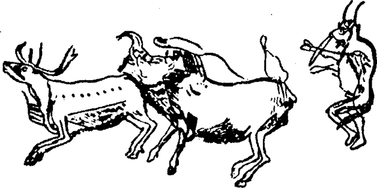
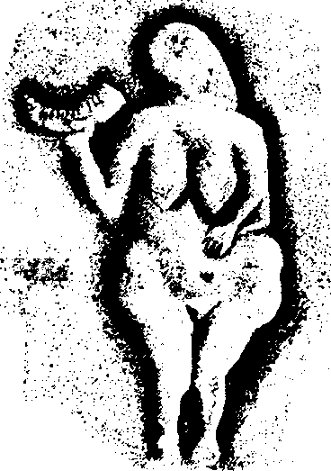

Montana Karaayak Kızılderililerinin yaşamları büyük buffalo sürülerinin geliş gidişlerine bağlıydı ve çok sayıda hayvan öldürebilmenin en iyi yollarından biri, hayvanları bir uçurumdan aşağı yöneltmek ve düşenleri kesmekti. Aynı yöntem Avrupa’nın buffalo dolu ovalarında 10 y. 30.000-10.000’lerde de kullanılıyordu. Bu dönem mağaralarında görülen resimlerdeki maskeli şamanla ayarttığı bizonun canlı dans adımı, George Bird Grinnell’in Vahşi Batı’da 70’lerin başlarında katılıp anlattığı av ve yöntemler arasındaki zaman ve mekânı aşan benzerlikler herkesi şaşırtacaktır. O dönemde bilim adamları eski Aryan geçmişi ancak İÖ 1500’lere tarihliyorlardı ve Wagner Nibelungen Halkasını yeni oluşturuyordu.
“Buffaloların pis’kun’a (buffalo tuzağı) sürülmesinden önceki günün akşamı genellikle buffalo kayasını kullanmakta olan büyücü, In-is-kim çubuğunu çıkardı ve başarı için Güneşe dua etti. Ertesi sabah çok erkenden buffaloları kaldıracak olan adam karılarına o dönene kadar kulübeden çıkmamalarını hatta dışarı bakmamalarını söyledi. Taze ot yakmalı ve onun başarısı ve güvenliği için Güneşe dua etmeliydiler. Bir şey yemeden ve içmeden çayırlara çıktı ve insanlar kayaların ve çalıların arkasına gizlenerek V biçiminde dizilip onu izlediler. Büyücü buffalo başından yapılmış bir başlık ve elbise giyerek hayvanlara yaklaşmaya başladı. Sürüye iyice yaklaşınca bazılarının dikkatini çekene kadar hareketler yaptı ve ona bakmaya başlayınca yavaş yavaş oluşturulan hilale doğru yürümeye başladı. Buffalolar genellikle onu izlerlerdi ve büyücü giderek hızım artırırdı. Buffalolar da hızlarını artırırlar ve adam sürekli biraz daha hızlı koşardı. Sonunda sürü hilalin içine girince kayaların arkasından çıkan adamlar bağırmaya ve elbiselerini sallamaya başlarlardı. Bu en arkadakileri korkuturdu ve öne doğru koştururlardı. Sürü tüm hızıyla uçuruma doğru koşmaya başlamış olurdu ve yığılan taşlar onları uçurumun başına yöneltirdi. Uçuruma ulaştıklarında hayvanların çoğu aşağı itilirdi hatta sonuncu bile körcesine pis’kuna atlardı. Çoğu ölmüş olurdu, bazıları bacaklarını, omurgalarını kırardı, belki birkaç tane yaralanmayan çıkardı. Fakat kaçmalarını önleyen bir set yapılmıştı ve onlar da oklarla öldürülürdü.
Buffaloyu hilalin içine sokmanın başka yolu da olduğu anlatılıyor. Buffaloların dikkatini çekmekte yetenekli biri hiç kılık değiştirmeden sürünün yanına gider, sürünün önünde koşturur, görünüp kaybolur ve kendisini izlemelerini sağlar. Artık onları hilale sokmak kolaydır.”358
Bir zamanlar -bir Karaayak öyküsüne göre- bir nedenle insanlar sürüyü uçuruma yöneltemediler ve aç kaldılar. Uçurumun kenarına kadar sürülen hayvanlar orada sağa sola sapıyor ve yan yamaçlardan inerek vadiyi güvenle geçiyorlardı. İnsanlar aç kalmıştı ve durumları tehlikeliydi.
Bir sabah erken su almaya giden bir kadın uçurumun kenarında otlayan sürüyü gördü ve “Çevirmeye atlarsanız içinizden biriyle evleneceğim” diye bağırdı.
Elbette bu şakaydı, ciddi değildi. Fakat hayvanlar uçurumdan aşağı atlamaya başladılar. Ve büyük bir boğa çevirmenin duvarını aşıp kendisine yaklaşmaya başlayınca kadın korktu. “Gel!” dedi boğa, kadını kolundan çekerek.
“Hayır!” diye bağırdı kadın kolunu kurtarıp.
“Ama buffalolar atlarlarsa biriyle evleneceğini sen söyledin, bak, çevirme dolu” Ve başka patırtıya izin vermeden kadını uçurumdan yukarı, başka çayırlara götürdü.
İnsanlar buffaloları öldürüp kestikten sonra genç kadını aradılar. Akrabaları çok üzgündü ve babası ok ve sadağını aldı “Onu arayıp bulacağım” dedi. Uçurumdan tırmanıp öteki çayırlara gitti.
Uzun bir süre yürüdükten sonra buffaloların yatıp yuvarlandığı çamurluk bir yere rastladı. Küçük bir sürü vardı. Yorgun olduğundan ve ne yapacağını düşünmek için orada oturdu. O düşünürken güzel siyah beyaz renkli, uzun gösterişli kuyruğu olan bir kuş, bir saksağan gelip yanına kondu.
“Hah!” dedi adam, “Sen güzel bir kuşsun. Bana yardım et! Uçarken çevreye bak ve kızımı görürsen ona baban seni birikintinin orada bekliyor de”.
Saksağan doğruca sürünün yanına uçtu, aralarında genç bir kadın gördü, kadına çok uzak olmayan bir yere kondu ve başını o yana bu yana çevirip kıza yaklaşınca “Baban seni birikintinin orada bekliyor” dedi.
“Şşşşt! Şşşt!” dedi kız korkarak ve çevresine bakındı, boğa kocası çok yakında uyuyordu. “Öyle yüksek sesle konuşma! Git ona beklemesini söyle”.
O sırada boğa uyandı ve karısına “Git bana su getir” dedi.
Kadın sevindi, başından bir boynuz alarak birikintiye gitti. “Baba!” dedi, “Niçin geldin? Seni öldürecekler.”
“Kızımı eve götürmek için geldim” dedi adam, “Haydi acele et, gidelim”
“Hayır, hayır, şimdi değil!” dedi kız. “Bizi izler ve öldürürler. Tekrar uyuyana kadar bekleyelim, o zaman sıvışmaya çalışırım.”
Boynuzunu suyla doldurup boğaya döndü. Boğa bir yudum aldı, “Buralarda bir insan var” dedi.
“Hayır, hayır, kimse yok!” dedi kadın. Fakat yüreği oynadı.
Boğa biraz daha su içti sonra ayağa kalktı ve böğürdü. Ne korkutucu ses! Boğalar ayağa kalktılar, kısa kuyruklarını dikip salladılar, başlarını kaldırıp böğürerek yanıt verdiler. Sonra yerleri çiftelediler, dört yöne koşturdular ve birikintiye gelip kızını arayan zavallı adamı buldular. Onu ayaklarıyla ezdiler, boynuzlarıyla dürttüler, gene ezdiler, sonunda adamın parçası kalmadı. Kızı “Babam, babam!” diye ağladı.
“İşte” dedi boğa, “babana ağlıyorsun. Belki bize neler olduğunu anlarsın. Biz annelerimizin, babalarımızın, birçok akrabamızın kayalardan aşağı yuvarlandığını ve senin halkın tarafından öldürüldüğünü gördük. Fakat sana merhamet edeceğim. Sana bir şans daha veriyorum. Eğer babanı yaşama döndürebilirsen sen ve baban halkınıza dönebilirsiniz”.
Kadın saksağana döndü. “Bana acı, bana yardım et!” dedi. “Gidip ezilmiş çamuru ara, babamın bir parçasını bulmaya çalış ve bana getir”.
Saksağan hemen birikintiye uçtu, bütün deliklere baktı, çamuru keskin gagasıyla karıştırdı ve sonunda beyaz bir şey buldu. Çamuru temizledi, asıldı ve bir omurga parçası çıkardı. Bununla genç kadının yanına döndü.
Kadın kemik parçasını yere koydu, elbisesiyle örttü ve şarkı söyledi. Elbiseyi kaldırınca babasının gövdesinin orda yattığını gördü, ölü gibi. Tekrar elbiseyi örtüp şarkısını söyledi ve elbiseyi kaldırdığında babasının nefes aldığını gördü. Sonra adam ayağa kalktı. Buffalolar şaşırmıştı. Saksağan çok sevindi, daireler çizip bir ötüştür kopardı.
“Bugün garip şeyler gördük” dedi boğa koca sürüdekilere. “Ezilip öldürülen adam gene yaşamaya başladı. İnsanların kutsal güçleri fazla.”
Genç kadına döndü, “Şimdi” dedi, “baban ve sen gitmeden önce size dansımızı ve şarkımızı öğreteceğiz. Bunları unutmamalısınız.”
Çünkü insanlar tarafından öldürülen buffaloların, buffalo tarafından öldürülen adam gibi, yaşama dönmesinin büyüsel araçları bunlardı.
Bütün buffalolar dans etti ve böyle büyük hayvanlara uygun olarak şarkı yavaş ve ağır başlı, adımlar hantal ve ağırdı.
Dans bitince boğa “Şimdi evinize gidin ve gördüklerinizi unutmayın. Bu dansı ve şarkıyı halkınıza öğretin. Ritin kutsal nesnesi boğa başı ve elbisesidir. Bütün dans edenler o sırada boğa başı takıp buffalo elbisesi giymeliler” dedi.
Kız ve baba köylerine döndüler. Halk onlara kavuştuğuna sevindi ve reisler kurulu toplandı. Adam olanları anlattı ve reisler genç insanlar seçtiler, onlara boğa dans ve şarkısı öğretildi.
Karaayakların erkek derneklerine I-kun-uh’-kah-tsi (Bütün Yoldaşlar) denilmesinin ve ilk kez örgütlenmesinin öyküsü budur. Görevi tören yaşamını düzenlemek ve topluma karşı suçları cezalandırmaktır.359 Ve ‘demir at’ çayırları kesip buffalolar kaybolana kadar, eski avcılar çiftçiliğe başlayıp çeşitli işlere girene kadar devam etmiştir.
Güney Fransa’da Trois Frères olarak bilinen kocaman paleolitik mağaradaki buffalo dansçısının resminde kıyafet aynı bu efsanede anlatılan gibidir ve aynı gücünü hayvanları uçurumdan düşürmek için kullanan cesur şamanın işini yaptığı görülmektedir ve bu efsanenin çok eski olduğuna dair bir ipucu -daha da kuvvetlisi kanıt- sunmaktadır. 
Trois Frères’deki şekiller
Ayrıca, komşu Tuc d’Audoubert olarak bilinen mağarada bir çıkıntı üstünde iki bizon kabartması vardır; çevrelerinde bir dansçının ayak izleri bulunmuştur. Resimde boğanın astığı bir inek temsil edilmektedir, ayak izleri de bütün tabanları değil topukları, hayvanların tırnaklarını çağrıştırır biçimde, göstermektedir. Persefon ve Demeter’in hayvan biçimlerinin domuz olması gerektiğini ve Persefon’un canavar yılanın gelini olarak yılan olduğunu belirtmiştik. Burda, aynı biçimde, boğanın karısı olduğuna göre, kız dişi buffaloydu yani aynı kutsal çiftin buffalo dansıyla insanoğluna ulaştırıldığı daha eski bir temsili olabilir.
Ayrıca Güney Fransa’da bir kaya sığınağın duvarına kabartması yapılmış Laussel Venüsü olarak bilinen ünlü paleolitik şekli de anımsamalıyız. O da avcılık döneminin dişi şekli olmalıdır. Eski taş çağını çağrıştıran geniş kalçaları ve iri göğüsleri vardır, omuz hizasına kadar kaldırdığı sağ elinde bir boğa boynuzu tutmaktadır. Sol eli dışarı fırlamış karnının üstündedir. Bulunduğunda rastlanılan yeteri kadar boya izinden bir zamanlar kırmızı boyalı olduğu anlaşılmıştır.

Laussel Venüsü
Sığınakta birkaç kırık dişi figürü vardır. İki dişi sağ ellerinde tanımlanamayan bir nesne tutmaktadırlar; dördüncü bir figür garip bir biçimdedir, altında bir başka kişinin başı ve omuzları vardır. Dr. G. Lalanne’e, kaşifine göre, bu doğum sahnesidir.360 Başı ve kolları kırılmış çevik görünüşlü bir erkek, mızrak attığını düşündürür bir hareket içindedir. Son olarak sırtlan ve at parçaları ve birkaç dişi cinsel simgeleri oyulmuş yassı ve blok parça bulunmaktadır. Fransız mağaraları konusunda dünya çapında uzman olan Abbé Breuil av mitolojisinin bu görünümlerini çok eski bir döneme, artık bu sanat için genellikle kabul edilen tarihleme olarak İÖ y. 30.000 yıllarının Aurignakian veya Perigordian dönemine ait bulmaktadır. Kadının elindeki bizon boynuzunun özelliğini bilmiyoruz ama boynuz olduğu kesindir ve mağara insanla hayvanın avcılık ritleriyle bağıntılı, uyuştuğu yer olarak -öykümüzün betimlediği ilişkideki gibi- kullanılmış olmalıdır. Güney Fransa’daki İÖ y. 30.000 yılına ait buluntuların Vahşi Batı’da İS 1870’de derlenmiş efsanenin çizimleri olduğunu ileri sürmüyorum ama, ortak motiflerin oluşmaya başladığını da söylemek gerekir.
Paleolitik mağaraların çoğunun duvarlarında, ritlere katılanların ellerinin izleri bulunmuştur ve bunların çoğu, daha önce ova kızılderililerinde bulunduğunu gördüğümüz parmak boğumlarının kesilmesi uygulamasında olduğu gibi, boğumsuzdur.
Crow kızılderililerinin Sabah Yıldızı duası şöyledir: “Yaşlı Kadının torunu, sana parmak boğumumu veriyorum, karşılığında bana iyi bir şey ver... fakirim, bana güzel bir at ver. Bir düşmanı vurmak istiyorum ve iyi huylu bir kadınla evlenmek istiyorum. Yaşamak için kendi çadırım olsun istiyorum”.361 Profesör Lowie, kaydettiği bu acıklı dua için “Crowlara ziyaretlerim sırasında (1907-1916) sol elleri bütün çok az yaşlı erkek gördüm” diyor.362
Bunlar ‘dürüst avcı’ların sakatlanmış elleridir, şamanların değil. Şamanların gövdeleri dokunulmazdır ve sundukları et değil ruhtur. İnsan toplumunun en eski döneminin popüler rit ve mitoslarının izindeyiz; kız kurbanı döneminden çok daha eski ve elbette zaman engelini aşıp ulaşmak da o kadar zor. Şamanlık geleneğinin Amerika’da bir kutuptan öteki kutuba, Tierra del Fuego’dan Yenisey Irmağına, Avustralya’dan Hudson Körfezine uzandığını artık biliyoruz. Şimdi paleolitik tapınakların genel, basit avcılık ritlerini zamanın en uzak, en bulanık derinliklerine kadar izlemeliyiz. Geçmişe doğru ilerledikçe ipuçları daha az ve daha dağınık. Bulduklarımızla gene de buffalo dansı ritlerinin ırkımızın başlangıcına kadar geri gittiğini önermemiz olasılığı hatta olanağı görünüyor.
Yolculuğa başlamadan önce Karaayak buffalo dansı efsanesinin paleolitik avın mitolojik atmosferinin nasıl olması gerektiği konusunda bize verebildiği ipuçlarını biraz yakından inceleyelim.
1. Ojibway mısırın kökeni efsanesinde olduğu gibi burada da eylem mitolojik bir çağa yerleştirilmiyor, günümüz dünyasında geçiyor. Kuşların ve hayvanların konuşmaları ve büyüleri bizi aldatmasın: bu tür büyü ve konuşmalar şamanlar için hala olanaklıdır ve bu efsanedeki bütün önde gelen karakterlerin şamanlık gücü vardır. I. kısım II. bölüm 5. ayrımda gördüğümüz Avusturalya mitos ve ritlerinde bizim zamanımızdan tamamiyle farklı, ataların dünyayı biçimlendirdiği mitolojik bir zaman vardı. Bu tür mitoslara Amerika’da da rastlanır. Bunun mitolojinin gelişim aşamasını temsil etmesi, şamanlık gücü olan erkek ve kadınların, hayvan ve kuşların kişisel macera öykülerinden sonra biçimlenmiş olması olasıdır. Çünkü şamanizmin olduğu her yerde mitolojik zaman ve mekân burasıdır ve şimdidir. Şamanlık gücüne sahip erkek veya kadın, hayvan, ağaç veya taş, başkaları için çoktan yok olmuş düşsel zamana somut olarak gidebilir.
Mitolojik zamandan söz eden, zincirleme bir olay dizisiyle özel bir biçimde içiçe geçmiş dönüşümle hem ölüm ve üremeyi ortaya çıkaran hem de yaşam boyu belirlenen bir kaderi yaratan büyük mitolojik olayı anlatan sistem şamanizm egemenliğindeki avcı dünyasından çok bitki yetiştiricilerin dünyasına aittir. Avcı toplumda bu tür mitoslar bulunduğunda tarımcı bahçeci bir kültür merkeziyle ilişki kurmuş olduğu varsayılabilir. Avustralya’da bu etki Malenezya’dan geliyordu. Kuzey Amerika kabileleri arasında da, Orta Amerika’nın yüksek uygarlıkları ve neolitik ve neolitik sonrası Çin’in (İÖ y. 2500’lerden sonra) yoğun etkisi vardı; bu etkileşimin izleri Sarı Irmağın güneylerinden Endonezya’ya, oradan batıya Madagaskar’a ve doğuya Brezilya’ya kadar363, öte yandan kuzeye Amur Irmağı, Kuzeydoğu Sibirya ve daha sonra Kuzey Amerika göçlerine kadar izlenebilir.364 Yani Amerikan mitoslarında saf paleolitik kalıtımla değil, oldukça karmaşık bir kültürle uğraşıyoruz. Yine birçok ipuçları, gördüğümüz gibi, Aurignakian mağaraların çok eski dönemine götürüyor bizi.
2. Efsanenin kurtarıcı kahramanı ve merkez kişiliği saksağandır. Onun aracı rolü olmasa hiçbir şey başarılamazdı ve burada şaman-dolandırıcının kuş biçimine girmesini, başkalaşmasını (kubilgan) görüyoruz. Çünkü şamanın toplumsal işlevi insanla doğanın örtüsü ardındaki kötü güçler arasında yorumculuk, çevirmenlik yapmaktır ve saksağanın da yaptığı tamamiyle budur.
3. Ölü adamın yaşama döndürülmesi kemik parçasının bulunmasıyla olabilmiştir. Bu olmadan hiçbir şey yapılamazdı. Bir başka biçime girebilir, bir zaman kötücül bir ruh olarak kalabilir sonra buffalo, kuş veya başka bir şey olarak yaşama dönebilirdi, fakat kemik parçası onu eskiden olduğu haliyle yaşama döndürmekte kullanılmıştır.
Bu parçanın avcıların bu konudaki düşüncelerinin öğrenilmesine bir işaret olduğunu düşünebiliriz aynı bitki yetiştiricilikte tohumun oynadığı rol gibi. Kemik başka bir şeye dönüşmez ve dağılıp yeşermez. Fakat bireyin eski halini alabilmesi için, büyüsel olarak yeniden canlanabilmesi için değişmeyen temeldir. Aynı adam canlanır, ana fikir budur. Ölümsüzlük grubun, ırkın, türün işlevi değil, bireysel olarak düşünülmektedir.
Bitki yetiştiricilerin görüşü grubun katılımını temel almaktadır; avcının bireysel ölümsüzlüğü bu anlamda bütün mistik geleneklerde bulunmaktadır ve ontolojinin gerçekleştirmesi ve tanımlaması gereken ana görevlerinden birini oluşturur; İki görüş birbirini bütünlemektedir ve karşılıklı olarak dışlamaktadır, gelişimin daha sonraki aşamalarında, gelişkin dinlerde kökten farklı görüşler olarak ortaya çıkmışlar ve insanın kaderi ve dünyadaki yaşamıyla ilgili zıt görüşler oluşturmuşlardır.
Örnek olarak İbrani kültünde, Yakındoğu’nun toprağa bağlı, antik uygarlıklarının mitos ve ritlerinin grup bilinci oluşturmuş kabile birimi tarafından uyarlanışında bireyin grubun kaderine katılımı, geçerli bir toplumsal tapınımın yapılabilmesi için on üç yaşından büyük en az on erkeğin bulunmasını gerekli gören yapı oluşturacak kadar önemli kılınmıştır. Bütün tören sistemi kabilenin kutsal tarihine bağlanmıştır. Oysa Hindistan yogasında kuzeyin steplerinin şaman etkisi kendini gösterir, durum tam tersidir; gizemin tam anlamıyla ulaşılıp yaşanacağı yer Himalaya zirvesinin yalnızlığıdır.
4. Efsanenin av hayvanları uçurumdan düşmeyi reddederler sonra rıza gösterirler. Onları etkileyen büyük boğa avcı mitoslarındaki önemli rol oynayan bir kişilik, hayvan arketipi veya hayvan efendidir. Onu Apaçi Hactcin’in başının çevresinde saat yönünde dönen ilk kuşla veya ötekilerine kaynaklık eden ilk dört ayaklı hayvanla karşılaştırabiliriz. Veya ilkel düşünceye sanıldığı kadar uzak olmayan bir felsefe terimiyle, büyük boğanın türlerin Platonik ideasını temsil ettiğini söyleyebiliriz. O sürüsündeki öteki hayvanlardan fazla bir boyuta sahiptir: onlar yalnızca gölgeyken (bizim gibi), o zaman dışı ve yok olmayandır. Onlar zaman ve mekâna bağlıdırlar. Düşer ve ölürler oysa o zarar görmez. Türünün ortaya çıktığı ilke veya diyarın özünün ifadesidir.
Hayvan türlerinin, insanın tersine, doğuştan gelen uyarıcı mekanizmaları klişeleşmiş olduğundan değişimdeki süreklilik gizeminin en iyi temsilcileri olarak görülmüşlerdir. Her türün, demek ki, kendi grup ruhu vardır. Ne kadar hayvan öldürülürse öldürülsün yeniler ortaya çıkar ve tıpatıp aynıdır. Tutucu Hıristiyanların şiddetli bir savaş verip yenildiği Kutsal Kitap görüşü, Platoncu-Aristotelesçi değişmez tür kavramı -üstün bir zihnin, üstün bir kuklacının zaman dışı irade ve tasarımıyla ilgili yarı felsefi ifadeler ve ortadaki değişimin hayal oluşuyla ilgili veya onu destekleyen özün yasa ve ülkesiyle ilgili görüşler- paleolitik dönemden kalma kabul edilebilir. Çünkü bütün ilkel düşünce içinde çok önemli bir yeri vardır.
5. Hayvanların, efendilerinin isteğiyle uçurumdan aşağı gitmeleri, etlerinin efendilerinin insanlara armağanı olarak düşünülmesini getirebilir. Bu boğanın büyüsel düzenidir. Efsanenin Karaayaklar için ilk dersi de budur. Buffaloları öldürmek doğaya aykırı değildir. Tersine, doğaya uygun olarak yaşayan yaşayanı yer ve hayvan kurban olmayı istemektedir, etini insana yiyecek olarak verir.
6. Fakat öldürmenin doğru ve yanlış yolu vardır. Kız babasını kalmış kemiğin büyüsüyle diriltti ve büyük boğa insanların büyüsünün görünüşte ölmüş olanı diriltecek kadar güçlü olduğunu gördü, onlara buffaloların büyüsel dans ve şarkısını öğretti böylece öldürülen buffalolar yaşama döndürülebilecekti. Çünkü büyü olan yerde ölüm yoktur. İnsanlar tarafından hayvan ritleri doğru biçimde yerine getirildiğinde hayvanlarla onları avlayan insanlar arasında büyüsel, muhteşem bir uyum vardır. Buffalo dansı, doğru biçimde yapıldığında, kesilen hayvanların yalnızca etlerini vermelerini, özlerini, canlarını vermemelerini sağlar. Böylece tekrar yaşayacaklar, daha doğrusu yaşamlarını devam ettireceklerdir ve gelecek mevsim oraya dönüp gelebileceklerdir.
Avın kendisi, dolayısıyla, kurban ritidir, kutsaldır, kaba dünyevi bir iş değildir. Buffaloların kendilerinden öğrenilen dans ve şarkı da buffaloları sürüp öldürmek kadar av tekniğinin bir parçasıdır. Bitki egemenliğindeki Ekvator bölgesinde gördüğümüz insan kurbanı insan kaderinin bitki dünyasındaki ölümü, çürümesi ve verimli dönüşümü ritleriyle belirlenmiştir ve güçlü bir etki olmadıkça (örneğin Pawnelerin belirli ritlerinde olduğu gibi) avcılar arasında görülmez. Avcı için olağan kurban hayvanın kendisidir, ölümü ve geri dönüşü kaza ve şans dünyasının gölgesindeki kalıcı haz ve varlığı temsil eder. Buffalo dansının şarkısında, dolayısıyla -yavaş ve ağırbaşlı, hantal ve ağır, büyük hayvanlara uygun biçimde- Hindu Bhagavad Gita’nın büyük temasının paleolitik ilk biçimini buluruz. Kozmik rüyanın kozmik rüyacısının, Efendi Vişnu’nun mistik şarkısı şöyledir: “Bütün bunları kaplayanın geçici olduğunu bil. Bu sonsuz, kalıcı, kavranılmaz özün barındığı gövdelerin ancak sonu vardır”365. Ya da Yunanlı bilge Pythagoras’ın sözleriyle “Her şey değişir, hiçbir şey ölmez. Ruh dolaşır, istediği yere gider ve şekli alır. Hayvanlardan insanlara geçer, bizim gövdelerimizden hayvanlara geçer, ama hiç yok olmaz.”366
Karibu Eskimosu Igjugarjuk’la karşılaştıralım. Güçlü şamanların yiyecek kıtlaştığında ülkesine gittikleri hayvanların dişi koruyucusu ‘Pinga’nın hayvanların ruhlarını koruduğunu ve çok fazlasının öldürülmesinden hoşlanmadığını söyler: “Hiçbir şey kaybolmaz. Bir karibu öldürüldüğünde kanı ve bağırsakları gömülmelidir. Yani yaşam sonsuzdur. Yalnızca ölümden sonra hangi biçimle geri döneceğini bilemeyiz.”367
7. Son olarak Karaayak kabilesinin toplumsal örgütlenmesinin temelini Bütün Yoldaşlar Derneği hiyerarşisinin oluşturduğunu belirtmeliyiz. Efsaneye göre bu maceradan sonra kurulmuştur. Grinnell bu hiyerarşinin, kendi ziyareti sırasında bilinen aşamalarının listesini vermiştir:
Küçük kuşlar |
15’ten 20 yaşına kadar erkekler |
Güvercinler |
bir kaç kez savaşa katılmış erkekler |
Sivrisinekler |
sürekli savaşa giden erkekler |
Yiğitler |
sınanmış savaşçılar |
Bütün Çılgın Köpekler |
kırk yaşın civarındaki erkekler |
Kuzgun Taşıyıcılar |
(tanımlanmamış) |
Köpekler; Kuyruklar |
yaşlılar; iki dernek fakat aynı giyinip birlikte dans ederler |
Boynuzlar; Kanlar |
Özel gizli törenleri olan dernekler |
Askerler |
(tanımlanmamış) |
Boğalar |
boğa başlığı ve elbisesi giyen bir dernek.368 |
Öyle anlaşılıyor ki, hiyeratik şehir devletindeki göklerdeki yıldızların dönüşüyle özdeşleştirilen toplum örgütlenmesinin, makrokozmik, takvime bağlı, göksel dayanaklı mitolojiyle, devlet ‘mezokozmos’unun uyumunu doğurması gibi, ve tropikal bölgelerde bitkinin insanın temel besinini oluşturup yaşam gizeminin ana modeli olması, mitolojik çağın ilk kurbanlarıyla özdeşleştirilen genç erkek ve kadınların grubu eşgüdümlendiren tören yapısının temel ve odak episodunu oluşturması gibi, burada da özdeşleştirme oyunu hayvanlarla oynanıyordu, özellikle de insan toplumunun geçiminin bağlı olduğu hayvanla. Oyun iki dünya arasında, ritlerde temsil edilen hayvanların iyiliği ve onların ortak oyuncusu insanın doğru biçimde bunu yerine getirmesine bağlı olan karşılıklı anlayış bulunduğu varsayımıydı. Bu oyun, antropologların on dokuzuncu yüzyılın sonlarında çok üstünde durduğu totem fikrinin temelini oluşturdu. Her mitos ve ritteki hayvan totemciliğin kalıntısı olarak görülmeye başlandı. Oysa totemcilik daha geniş bir ilkenin bir yönü ve yarattığı tek bir etkidir, kişisel koruyucu ‘hayvan efendi’ ve ‘hayvan kılavuz’da da aynı biçimde ortaya çıkmaktadır.
Totemci bir toplumda çeşitli kılan ve grupların yarı hayvan, yarı insan ataları olduğu, aynı adlı hayvandan geldikleri düşünülür. İnsanlar kuzenleri olan hayvanları öldürüp yemezler ve totem grubu içinden evlenmezler. Kuzey Amerika’nın kızılderili kabilelerinin ve Avustralyalıların çoğu totemcidir ve bu fikrin çok geçmişlere gittiğini düşünmek için yeteri kadar neden vardır. Fakat avcı dünyasının komşuları ve yaşam arkadaşları hayvanlarla ilişkilerinin bittiği anlamında değildir bu. Çünkü hayvalar, totem atalar gibi büyük şamanlar ve büyük öğretmenlerdir. Avcının dünyasını içerden ve dışardan doldururlar. Geçen bir hayvan, uçan bir kus, koşan bir dört ayaklı veya sürünen bir yılan bir mucizeye işaret eden bir haberci olabilir; başkalaşmış bir şaman veya belki uyarı veya koruma amacıyla gelmiş kişisel bir koruyucu olabilir.
Geçmişin karanlıklarını aydınlatan, insanın çağlar önce bitkisel dünya egemenliğine ait kader ilkesine bağlanmasından önceki gizemi açıklayan olgulardan biri ölümsüz hayvan sürüsü ve onun ruhunu yöneten av yasalarıdır. Frobenius Afrika gezilerinden birinde bunu anlatır:
“1905 yılında, Kasai ve Luebo (Belçika Kongosunda) arasındaki bir cangıl bölgesinde avcı kabilelerinin üyeleriyle karşılaştım. Ovalardan Kongo cangıllarına sürülmüşlerdi, Afrika yazınında pigme olarak bilinen insanlardı. Üç erkek bir kadın, dört kişi bir hafta süreyle gezimize katıldılar. Bir gün, akşama doğruydu ve birbirimize iyice alışmaya başlamıştık, kamp mutfağımızda tekrar malzeme bulma gereksinimi kendini hissettiriyordu. Üç küçük erkeğe bize antilop bulabilirler mi diye sordum, avcı olduklarına göre bu onlar için zor bir görev olmamalıydı. Bana şaşırarak baktılar ve biri sonunda açıklama yaptı, elbette bizim için bir şey yapmaktan memnun olurlardı fakat o gün bu olanaksızdı çünkü hiçbir hazırlık yapılmamıştı. Görüşmelerin sonunda avcılar ertesi günün şafağına kadar hazırlıklarını tamamlamış olacaklarını söylediler. Böylece ayrıldık. Erkekler çevreyi dolaştılar ve sonunda yakınlardaki bir tepenin üstüne yerleştiler.
Hazırlıkların ne olacağını çok merak ettiğim için sabah erkenden kalktım ve küçük adamların hazırlık yeri olarak seçtikleri açık alanın yakınındaki çalıların arkasına saklandım. Daha hava aydınlanmamıştı ki adamlar geldiler fakat yalnız değildiler. Kadın da yanlarındaydı. Erkekler çömelip bütün bitkileri temizlediler, toprağı dümdüz yaptılar. Biri parmağıyla toprağa bir şekil çizdi. Öteki erkekler ve kadın dua benzeri sözler mırıldandılar; sonra sessizlik oldu. Beklemeye başladılar. Güneş ufukta yükseldi. Erkeklerden biri yayında okunu çekmiş temizlenmiş alanın ortasına geldi. Bir kaç dakika içinde güneş ışınları temizlenmiş alana vurdu şimşek hızıyla şunlar oldu: kadın güneşe uzanır gibi ellerini kaldırdı ve anlaşılmaz şeyler bağırdı, erkek okunu attı; kadın tekrar bağırdı ve erkekler silahlarıyla ormana koştular. Kadın birkaç dakika orada kaldı sonra kampa döndü. Kadın ayrılınca ben de saklandığım yerden çıktım ve yere çizilmiş şeklin antilop olduğunu gördüm. Bir buçuk metreyi buluyordu ve ok boynuna atılmıştı.
Erkekler avdayken oraya dönüp fotoğraf çekmek istedim ama kadın yapmamam için yalvardı ve vazgeçmemi istedi. Böylece geziye devam ettik. Erkekler o öğleden sonra güzel bir erkek karacayla bize katıldılar. Küçük adamlar avlarını bıraktılar ve püskülünden bir tutamla sukabağı dolusu kanını tepedeki tören alanına götürdüler. İki gün sonra bize tekrar yetiştiler ve o akşam palmiye şarabının verdiği cesaretle konuyu üç arkadaşımdan en yakınıma açtım. En yaşlılarıydı. Bana basitçe geri koşup saçı ve kanı şekle yerleştirdiklerini, oku çekip çıkarttıklarını ve sonra şekli sildiklerini anlattı. Hareketin nedenleri hakkında hiçbir açıklama yoktu, yalnızca bunun yapılmasıyla antilobun kanının heder edilmemiş olduğunu söyledi. Silme işleminin de güneş doğuşunda yapılması gerekiyordu.
Benden kadının bu konuda konuştuğunu öğrenmemesini rica etti. Konuşmuş olduğu için büyük endişe içinde olduğu görülüyordu. Ertesi gün pigmeler, bize, doğru dürüst veda etmeden ayrıldılar, herhalde onun isteğiyle böyle yaptılar, çünkü grubun önderi oydu.”369
İşlemin anlamını ve eskiliğini, temel olarak Kongo cangıllarından Hudson Körfezine kadar aynı görünen ideolojinin kalıcılığını anlamak için Karibu Eskimo İgjugarjuk’un sözlerini anımsamamız yeterli: “Karibu öldürüldükten sonra kanı ve bağırsakları gömülmeli. Yani, yaşamın sonsuz olduğunu görüyoruz.”
Frobenius “Kanı dökmek güçlü bir büyü ve intikam alınmasını engelliyor” diye açıklama yapıyor.370
Bir şey daha: Pigme töreninin önemli yönlerinden biri ritin şafak zamanı yapılması, okun, güneş antilop şekline değer değmez atılması. Çünkü güneş bütün avcı mitolojilerinde büyük bir avcıdır. Güneş kükremesi sürüleri kaçırtan aslandır, boynuna attığı pençeyle antilobu öldürür, kuzuyu kapıp götüren kartaldır, ışıkları gece sürüleri yıldızları dağıtan ışıklı küredir. Bu ilkel avcı mitosunda paleolitik sanatın çok yaygın bir motifi, aslanın arkasına bakmak için başını çevirmiş antilobun boynuna daldığı anı ve ilk kez Sümer sanatında görülen bir başka motifi, güneş kartalının pençeleriyle antilobu yakalamasını görüyoruz.
Benzetmelerin çözülmesiyle çıkarılan ders şu: Güneş avcıdır, güneş ışığı oktur, antilop yıldız sürüsünün üyelerinden biridir; böylece, ertesi gece yıldızın geri dönmesi gibi, antilop da dönecektir. Avcı hayvanı kişisel, gönüllü bir eylemle öldürmemiştir, fakat Büyük Ruh’un yasalarına uygun olarak öldürmüştür. Bu yolla da hiçbir şey heder olmaz’.